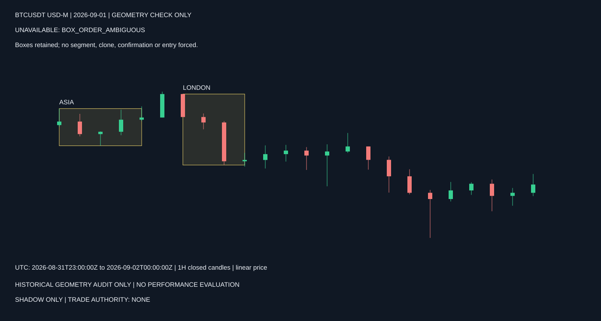
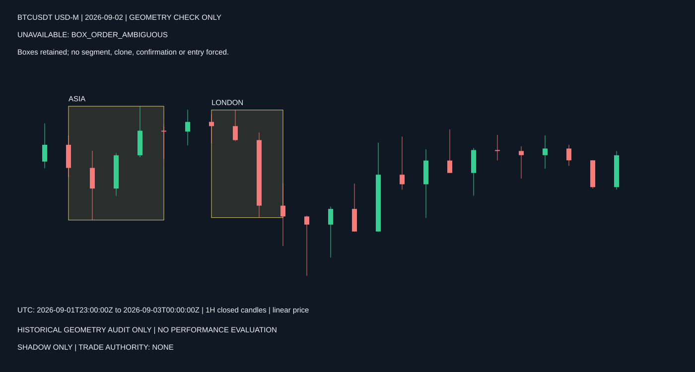
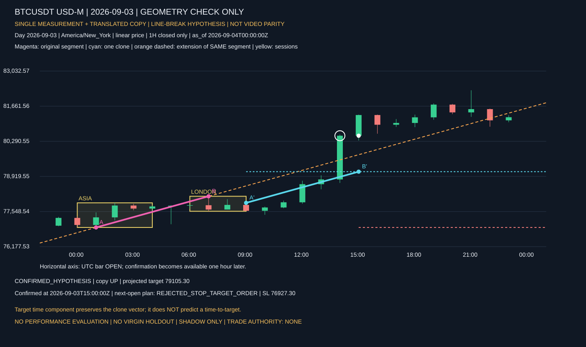
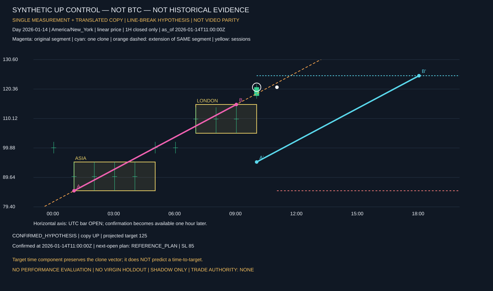
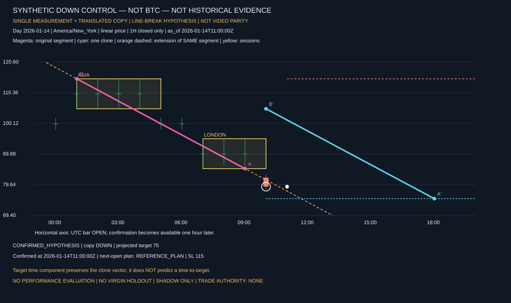

Historical visual checks, no performance evaluation. Hypothesis: the original measurement extended is the trigger line; NOT exact video parity.
ALL three session pairs in the fixed excerpt are retained, including ambiguous/rejected cases. SHADOW ONLY. TRADE AUTHORITY: NONE.




